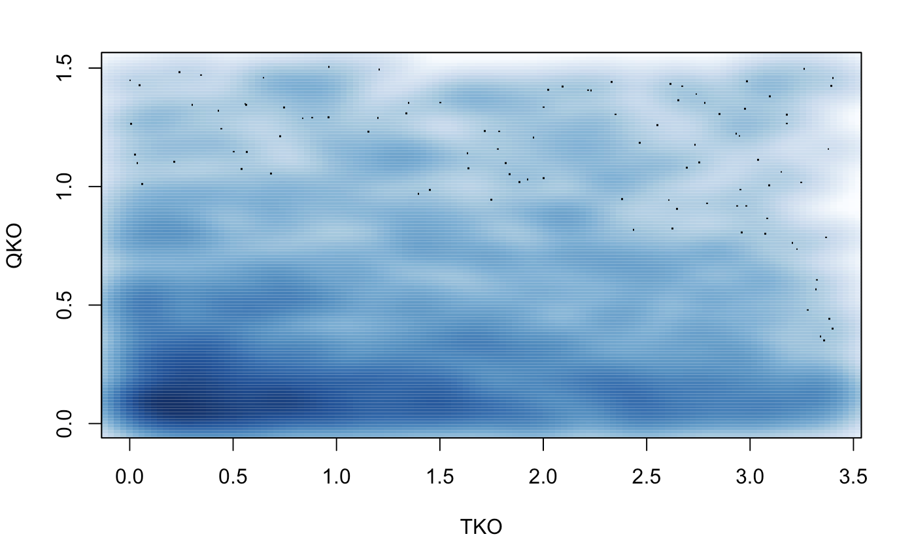
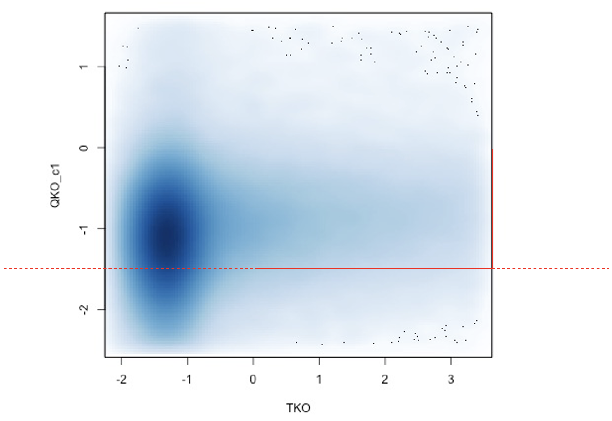
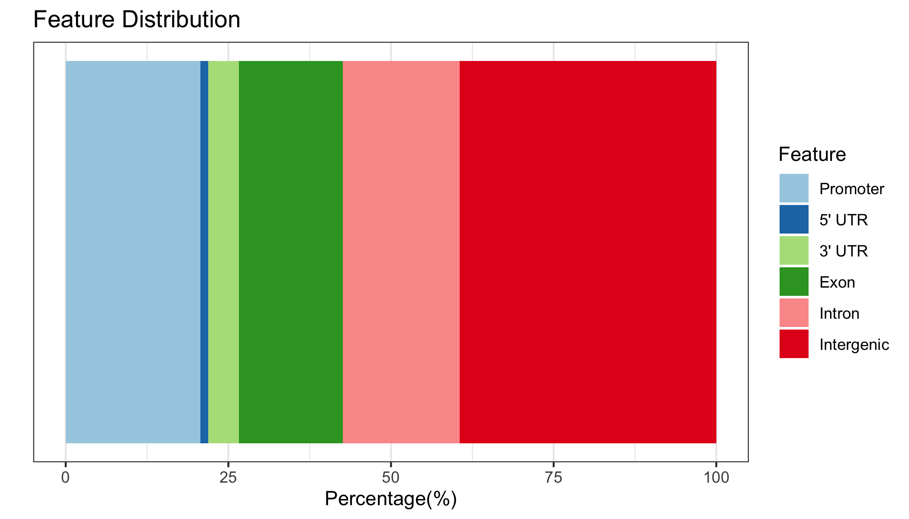

Removing the cluster where K36me2 is 0 for both conditions does not result in any viable clusters. 
Instead, we can focus on bins that pass a specific threshold. These bins would be located within the red box below, indicating K36me2 deposited by NSD3 that is lost in QKO. 
